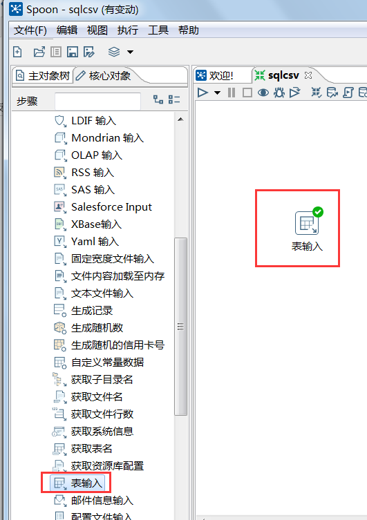
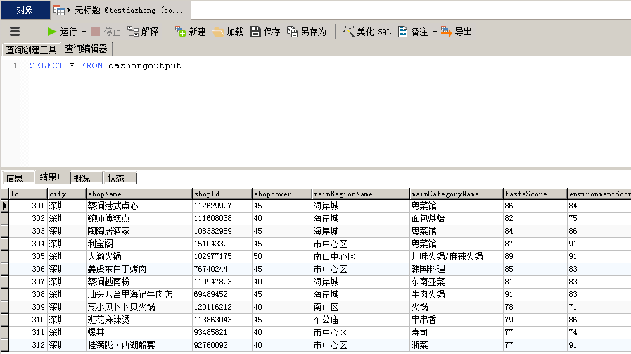

案例实训-基于Python+MySQL+Kettle+R的某点评网数据采集分析
- 基于Python+MySQL+Kettle+R的某点评网数据采集分析
- 0. 案例简介
- 1. Python编程爬取某点评网数据
- 2. 利用Kettle进行数据清洗转换
- 3 数据统计分析
- 4 小结
基于Python+MySQL+Kettle+R的某点评网数据采集分析
本案例涉及数据采集、存储、查询、清洗和可视化分析等数据处理全流程所涉及的各种典型操作，涵盖Python、MySQL、Navicat、Kettle、R语言等系统和软件的使用方法。本案例适合高校大数据相关专业教学，可以作为学习大数据的综合实践案例。通过本案例，将有助于读者综合运用大数据知识以及各种工具软件，实现数据全流程操作。
0. 案例简介
本次实践的数据来源于国内某点评网站Top100餐厅网页，包括商户名称、所在商区、口味、环境、服务评分以及人均消费等数据，如图所示:
0.1 案例目的
案例综合实践的目的就在于通过对该点评数据进行统计分析，评估各城市餐厅、菜品，帮助游客选择适合自己的餐厅就餐。
- 编写Python爬虫程序采集数据
- 了解MySQL操作，存储数据
- 了解Kettle进行数据清洗、转换流程和操作
- 使用Python、R进行数据统计分析可视化展示
0.2 适用对象
- 高校（高职）教师
- 高校（高职）学生
- 大数据学习者
- 数据处理分析者
0.3 时间安排
本案例可以作为大数据课程结束后的“大作业”，或者可以作为学生暑期或寒假大数据相关专业实习实践基础案例，建议2天。
0.4 硬件要求
本案例可以在单个虚机上完成，也可以在虚拟集群环境下完成。单虚机上完成本案例实验时，建议硬件配置为：8CPU，8GB以上内存，100GB以上硬盘。
0.5 软件工具
本案例所涉及的系统及软件包括：Windows, Python, Pycharm, MySQL, Navicat, Kettle、R等。
相关软件的版本建议如下：
- Windows：Windows 7
- Mcrosoft office: 2013
- JDK:1.8
- Python: 3.7（64位）
- Pycharm: Community 2018.2
- MySQL：5.7
- Navicat for MySQL：11.1.13(64位)
- Kettle：7.0
- R：3.5.1
- Rstudio:1.1
*注意：案例实验操作，请使用chrome浏览器或者较新的360浏览器极速模式。0.6 案例任务
本案例需要完成以下实验任务：
(1) Python编程爬取点某评网数据，存储于MySQL数据库
(2) 利用Kettle对MySQL表数据进行清洗，一份存储到MySQL新表，一份转换成CSV文件
(3) 使用Python、R进行数据统计分析、可视化展示
0.7 实验步骤概述
本案例共包含3个实验步骤：
1：Python编程爬取某点评网数据存储于MySQL数据库
2：利用Kettle进行数据转换、清洗
3：利用Python、R进行数据统计分析、可视化展示
下面表格分别给出了每个实验步骤所需的知识储备、训练技能和任务清单。
表1：Python编程爬取某点评网数据存储于MySQL数据库
| 所需知识储备 | Python基础知识、使用、编程，MySQL数据库基础知识、Navicat使用 |
|---|---|
| 训练技能 | Python编程调试、Mysql、Navicat基本操作 |
| 任务清单 | Python爬虫某点评网数据、解析数据、创建数据库存储数据 |
表2：使用Kettle进行数据转换、清洗
| 所需知识储备 | Kettle基本使用 |
|---|---|
| 训练技能 | Kettle基本使用、数据清洗、数据转换 |
| 任务清单 | 使用Kettle建立数据清洗、转换流程，一是完成MySQL数据表清洗存储到新表，二是MySQL表数据清洗后转换成CSV文件 |
表3：利用Python进行数据统计分析、可视化展示
| 所需知识储备 | Python、R工具选择其一,熟悉基本使用 |
|---|---|
| 训练技能 | 编程调试能力、数据统计分析能力、数据可视化设计 |
| 任务清单 | 编程调试、数据统计分析、数据可视化 |
1. Python编程爬取某点评网数据
本节介绍什么是爬虫、爬虫基本原理、爬虫基本步骤、爬虫实战案例。
1.1 什么是爬虫？
爬虫，即网络爬虫，可以理解为在网络上爬行的一只蜘蛛，在互联网这张大网上爬来爬去，抓取各种资源。
用户浏览网页，输入URL网址后，实际上经过DNS服务器解析找到网页服务器向其发送一个请求，服务器解析后发送响应消息，用户就看到HTML代码的网页了，包含文本、图片等内容。
爬虫爬取的就是这些内容，通过分析HTML代码，获取相应的图片和文本内容，例如：打开chrome浏览器，输入：http://www.163.com, 页面如下
右键点击“查看网页源代码”，我们可以看到HTML代码如下，里面包含标签、块等元素及属性信息。
1.2 爬虫基本原理
通过程序模拟浏览器向服务器站点发起请求，将站点返回的响应，例如HTML代码/JSON数据/二进制数据（图片、视频）等爬取到本地，提取自己需要的数据存放起来使用。
1.3 爬虫基本步骤
（1）发起请求
使用HTTP协议向目标站点发起请求，也就是发送一个Request，Request包含请求头、请求体等， 等待服务器响应。
（2）获取响应内容
如果服务器能正常响应，会得到一个Response，Response的内容便是所要获取的页面内容，类型可能是HTML，Json字符串，二进制数据（图片或者视频）等类型。
（3）解析内容
得到的内容不同解析方式也不同。
- HTML页面：正则表达式解析，或者使用第三方解析库如Beautifulsoup，pyquery等进行解析。
- Json数据：转换为Json对象解析。
- 二进制数据：可以做保存或者进一步的处理。
（4）保存数据
保存形式多样，可以存为文本，也可以保存到数据库，或者保存特定格式的文件。
1.4 爬虫实战案例——某点评网数据爬取
本爬虫案例爬取某点评网站50个城市排名TOP100的餐厅网页，并分析这些餐厅名称、ID、地址、所属商区、菜品分类、口味得分、环境得分、服务得分、人均消费等存储到MySQL数据库。
1.4.1 拟爬取网页初步分析
本案例拟爬取某点评网站50个城市排名TOP100的餐厅网页，每个城市对应一个网页地址，以北京为例，北京排名TOP100的餐厅网页(本文档中dp01.ds.quancube.cn为内部网址，请使用虚机内部的chrome浏览器打开，注意复制链接请使用自动弹出的复制按钮进行复制)
http://dp01.ds.quancube.cn/?rankId=d5036cf54fcb57e9dceb9fefe3917fff71862f838d1255ea693b953b1d49c7c0
通过观察每个城市的链接主要区别在于rankId，每个城市有特定的ID，例如：
北京排名TOP100的餐厅HTML网页的rankId: 652e242ca0227790d18acff20ae02272
济南排名TOP100餐厅HTML网页的rankId: 4be7d758168826991eb4b3e779fdf41571862f838d1255ea693b953b1d49c7c0
济南HTML网页地址可通过修改rankId得到为：
http://dp01.ds.quancube.cn/?rankId=4be7d758168826991eb4b3e779fdf41571862f838d1255ea693b953b1d49c7c0
因此先获取到相应城市的ID，以便后续进行数据抓取。打开上面济南排名TOP100餐厅的HTML网页，显示如下：
按住“Fn”键不动接着按下F12键，点击“Network”和“XHR”出现如下界面，出现如下界面。
接着按下Ctrl+R键，出现如下界面
点击最下方红框处，出现如下界面，点击Headers看到general中Request URL：
http://dp01.ds.quancube.cn/mylist/ajax/shoprank?rankId=4be7d758168826991eb4b3e779fdf41571862f838d1255ea693b953b1d49c7c0
, 该网页所有数据通过Ajax接口获得，并且 在Response Headers中看到“Content-Type:application/json;charset=UTF-8”, 获得的响应是JSON数据，编码是UTF-8格式。
在浏览器中，输入进入该链接
http://dp01.ds.quancube.cn/mylist/ajax/shoprank?rankId=4be7d758168826991eb4b3e779fdf41571862f838d1255ea693b953b1d49c7c0
得到JSON字符串，如下图所示，最终抓取的数据只需要解析json便可获得所需字段，主要包括城市、商铺名称、编号、星级、所在商区、菜品分类、口味评分、环境评分、服务评分、人均消费、网址、图片。同之前请求一样，只需要替换rankId便可进行多城市数据爬取。
我们获得的50个城市rankId，首先对前30个城市进行数据爬取。
["上海", "fce2e3a36450422b7fad3f2b90370efd71862f838d1255ea693b953b1d49c7c0"],["北京", "d5036cf54fcb57e9dceb9fefe3917fff71862f838d1255ea693b953b1d49c7c0"],["广州", "e749e3e04032ee6b165fbea6fe2dafab71862f838d1255ea693b953b1d49c7c0"],["深圳", "e049aa251858f43d095fc4c61d62a9ec71862f838d1255ea693b953b1d49c7c0"],["天津", "2e5d0080237ff3c8f5b5d3f315c7c4a508e25c702ab1b810071e8e2c39502be1"],["杭州", "91621282e559e9fc9c5b3e816cb1619c71862f838d1255ea693b953b1d49c7c0"],["南京", "d6339a01dbd98141f8e684e1ad8af5c871862f838d1255ea693b953b1d49c7c0"],["苏州", "536e0e568df850d1e6ba74b0cf72e19771862f838d1255ea693b953b1d49c7c0"],["成都", "c950bc35ad04316c76e89bf2dc86bfe071862f838d1255ea693b953b1d49c7c0"],["武汉", "d96a24c312ed7b96fcc0cedd6c08f68c08e25c702ab1b810071e8e2c39502be1"],["重庆", "6229984ceb373efb8fd1beec7eb4dcfd71862f838d1255ea693b953b1d49c7c0"],["西安", "ad66274c7f5f8d27ffd7f6b39ec447b608e25c702ab1b810071e8e2c39502be1"],["青岛", "9874ff91c8b50ad831ea897b0cd5315b71862f838d1255ea693b953b1d49c7c0"],["济南", "4be7d758168826991eb4b3e779fdf41571862f838d1255ea693b953b1d49c7c0"],["威海", "fb5f85ca4c696d61c6e7a7e6c19b2f4530aacdebee4c4c9365dc18972daccaf7"],["长春", "261f655c7a9713696580432624721cd871862f838d1255ea693b953b1d49c7c0"],["大连", "21f56d987e57bd3e8df308351e3f4b9171862f838d1255ea693b953b1d49c7c0"],["佛山", "4e5d3a805c4f1ed6059c7074e5e86adf30aacdebee4c4c9365dc18972daccaf7"],["贵阳", "7ae3d5049e1c200ed6b2db0ac51604ba30aacdebee4c4c9365dc18972daccaf7"],["合肥", "94af1388885f0b7483fdf72cba086a6030aacdebee4c4c9365dc18972daccaf7"],["呼和浩特", "d64d5919fc236699402122b5770b4a6f71862f838d1255ea693b953b1d49c7c0"],["昆明", "45159d85c35f742c1f2635d6ea6fa3ae30aacdebee4c4c9365dc18972daccaf7"],["兰州", "b201713f2fb5f7235b6e2a6de8faf6a630aacdebee4c4c9365dc18972daccaf7"],["南宁", "ff6f15347ab16f86ffb34e2700c4870930aacdebee4c4c9365dc18972daccaf7"],["秦皇岛", "ca02d37fa01b0f9613555237517e19ff71862f838d1255ea693b953b1d49c7c0"],["沈阳", "eec1fb195780b91fc9dd065409c1d28471862f838d1255ea693b953b1d49c7c0"],["太原", "293e6160d971fe48ebbed1c8033bd9ed71862f838d1255ea693b953b1d49c7c0"],["唐山", "2ae2237467ce4784b1705be502b0315271862f838d1255ea693b953b1d49c7c0"],["无锡", "51ff28145b3f63e2f9ec4b2a34e8850c71862f838d1255ea693b953b1d49c7c0"],["扬州", "02eeb7a9021c215641f3ec0e3cede50b71862f838d1255ea693b953b1d49c7c0"]
有的网站会设置反爬机制，或者监听到外部爬取数据会封号，导致数据无法继续爬取。该点评网网页没有特别反爬限制，我们只需要不断轮换用户代理便可绕过反爬。请求头的设置如下：
#用户代理，是一个特殊字符串头，使得服务器能够识别客户使用的操作系统及版本、浏览器及版本、浏览器渲染引擎、浏览器语言、浏览器插件等#USER_AGENT_LIST = ["Mozilla/5.0 (Windows NT 6.1; WOW64) AppleWebKit/537.1 (KHTML, like Gecko) Chrome/22.0.1207.1 Safari/537.1","Mozilla/5.0 (X11; CrOS i686 2268.111.0) AppleWebKit/536.11 (KHTML, like Gecko) Chrome/20.0.1132.57 Safari/536.11","Mozilla/5.0 (Windows NT 6.1; WOW64) AppleWebKit/536.6 (KHTML, like Gecko) Chrome/20.0.1092.0 Safari/536.6","Mozilla/5.0 (Windows NT 6.2) AppleWebKit/536.6 (KHTML, like Gecko) Chrome/20.0.1090.0 Safari/536.6","Mozilla/5.0 (Windows NT 6.2; WOW64) AppleWebKit/537.1 (KHTML, like Gecko) Chrome/19.77.34.5 Safari/537.1","Mozilla/5.0 (X11; Linux x86_64) AppleWebKit/536.5 (KHTML, like Gecko) Chrome/19.0.1084.9 Safari/536.5"]#设置随机选择用户代理#head = {'User-Agent': '{0}'.format(random.sample(USER_AGENT_LIST, 1)[0]) # 随机获取}
*小贴士：什么是JSON？
JSON 指的是 JavaScript 对象表示法（JavaScript Object Notation）
- JSON 是轻量级的文本数据交换格式
- JSON 独立于语言
- JSON 具有自我描述性，更易理解
- JSON 使用 JavaScript 语法来描述数据对象，但是 JSON 仍然独立于语言和平台。JSON 解析器和 JSON 库支持许多不同的编程语言。
例子：
这个 employee 对象是包含 3 个员工记录（对象）的数组。{"employees": [{ "firstName":"Bill" , "lastName":"Gates" },{ "firstName":"George" , "lastName":"Bush" },{ "firstName":"Thomas" , "lastName":"Carter" }]}
1.4.2 创建MySQL数据库
为了存放爬取的数据，我们采用MySQL数据库。我们可以通过命令行创建并操作数据库，也可以利用GUI工具Navicat进行，本案例使用Navicat工具，并提供sql脚本文件。学生直接导入脚本文件即可使用数据库表。首先确认MySQL数据库是否已启动，在“计算机”上点击右键，点击“管理”，弹出“计算机管理”界面。
点击“服务和应用程序”下的“服务”，查看MySQL服务状态，如下图所示，状态显示“已启动”，表明MySQL服务正常运行，若没有显示，则在该服务上点击右键手动启动。
双击桌面上的“Navicat for MySQL”图标，进入如下界面，点击文件->新建连接->MySQL
出现如下界面，设置参数：
- 连接名：用户自定义
- 主机名或IP地址：localhost
- 端口：3306
- 用户名：root
- 密码：shuidilab@123
点击“测试连接”，弹出“连接成功”对话框，即连接成功。点击“确定”，显示新建连接“con1”，双击该连接，显示如下界面。
在con1上点击右键，点击“新建数据库”，弹出界面，输入数据库名称“testdazhong”,选择字符集和排序规则，如下图所示。
点击“确定”进入如下页面，显示新创建数据库“testdazhong”
双击“testdazhong”，然后在“testdazhong”上点击右键，点击“运行SQL文件”，弹出如下界面，从C盘sqlfile目录下选择文件“fdazhongfood.sql”
点击“开始”，出现如下界面表示导入成功，关闭该界面。
在“testdazhong”下的“表”上点击右键，点击“刷新”，显示如下界面，可以看到数据表dazhonginfo已经导入。
选中数据表“dazhonginfo”，点击“设计表”，我们可以看到数据表各个字段的类型、长度的定义，如下图所示。
各字段含义如下：
| 序号 | 字段名称 | 字段意义 | 备注 |
|---|---|---|---|
| 1 | Id | 记录序号 | |
| 2 | city | 城市 | |
| 3 | shopName | 商铺名称 | |
| 4 | shopId | 商铺编号 | |
| 5 | shopPower | 商铺星级（大众点评自己的评星） | 30：三星 35：三星半 40：四星 45：四星半 50：五星 |
| 6 | mainRegionName | 所在商区 | |
| 7 | mainCategoryName | 所属菜品分类 | |
| 8 | tasteScore | 口味评分 | |
| 9 | environmentScore | 环境评分 | |
| 10 | serviceScore | 服务评分 | |
| 11 | avgPrice | 人均消费 | |
| 12 | shopAddress | 商铺地址 | |
| 13 | shopUrl | 商铺网址 | |
| 14 | defaultPic | 商铺图片 |
关闭，双击“dazhonginfo”表，我们可以看到表的内容，如图所示，该表是空表。
1.4.3 Python编程爬虫
1.4.3.1 新建项目
打开桌面上的JetBrains PyCharm，点击“+创建新项目”创建一个新项目，如果之前已经使用过PyCharm，选择”文件”->“新建项目”创建新项目。
新创建项目进入如下界面，在Location选择项目目录，或者直接输入新目录名称，例如C:\dazhongspider。然后选择第二个现存的解释器，默认：C:\Program Files\Python37\python.exe。
然后单击New Project对话框底部的“ Create”按钮,启动过程中弹出如下对话框，将复选框“√”勾掉，关闭。
进入工程页面，点击“文件”->“设置”->“外观&行为”，点击下方“外观”，在右边UI选项，主题下拉框中选择“IntelliJ”，如图所示，点击“确定”修改完成pycharm视图背景，返回工程页面，点击“视图”菜单勾选“工具栏”。
若没有看到具体的工程“dazhongspider”，则在工程页面中点击左侧的“Project”标签，看到创建的python项目，如下图所示。
1.4.3.2设置爬虫代码目录
为了便于项目管理，设置不同的目录编写程序，选中该项目“dazhongspider”，点击右键选择“新建”->“目录”，如图所示。
在弹出的界面中（如下图所示），设置爬虫程序的目录名称为“spider”。
1.4.3.3 python编程数据存储
选中“dazhongspider”项目->“spider”目录，点击 “新建”->“Python File”，如下图所示。
在弹出的对话框中输入文件名“dbconnect”，点击“确定”进入下图所示的“dbconnect.py”文件编辑界面。

输入下面数据库操作代码到“dbconnect.py”文件中并保存。
import pymysql# 数据库操作类，这个类用于连接数据库、插入数据、查询数据class DBHelper():#定义构造函数，self实例变量属性def __init__(self):self.host = 'localhost' # MySQL服务器地址self.port = 3306 # MySQL服务器端口号self.user = 'root' #用户名self.passwd = 'shuidilab@123' #密码self.db = 'testdazhong' #数据库名称# 定义连接到数据库的方法def connectDatabase(self):#创建连接对象conn = pymysql.connect(host=self.host,port=self.port,user=self.user,passwd=self.passwd,db=self.db,charset='utf8') # 要指定编码，否则中文可能乱码return conn# 插入数据def insert(self, sql, *params): # 注意这里params要加*,因为传递过来的是元组，*表示参数个数不定conn = self.connectDatabase()#创建游标对象cur = conn.cursor()#执行sql语句cur.execute(sql, params)#注意要commit，提交conn.commit()cur.close()conn.close()# 查询数据def select(self, sql):conn = self.connectDatabase()cur = conn.cursor()try:# 执行SQL语句cur.execute(sql)conn.commit()# 获取所有记录列表results = cur.fetchall()return resultsexcept:print("Error: unable to fecth data")cur.close()conn.close()
1.4.3.4 Python爬虫编程
如下图所示，选中“dazhongspider”项目->“spider”目录，点击“新建”->“Python File”。
在弹出的对话框，输入文件名 “spider”，点击“确定”，进入“spider.py”的编辑界面。
输入下面的爬虫代码到该文件中并保存。
import jsonimport randomimport requestsimport dbconnect# 城市列表listcity = [["上海", "fce2e3a36450422b7fad3f2b90370efd71862f838d1255ea693b953b1d49c7c0"],["北京", "d5036cf54fcb57e9dceb9fefe3917fff71862f838d1255ea693b953b1d49c7c0"],["广州", "e749e3e04032ee6b165fbea6fe2dafab71862f838d1255ea693b953b1d49c7c0"],["深圳", "e049aa251858f43d095fc4c61d62a9ec71862f838d1255ea693b953b1d49c7c0"],["天津", "2e5d0080237ff3c8f5b5d3f315c7c4a508e25c702ab1b810071e8e2c39502be1"],["杭州", "91621282e559e9fc9c5b3e816cb1619c71862f838d1255ea693b953b1d49c7c0"],["南京", "d6339a01dbd98141f8e684e1ad8af5c871862f838d1255ea693b953b1d49c7c0"],["苏州", "536e0e568df850d1e6ba74b0cf72e19771862f838d1255ea693b953b1d49c7c0"],["成都", "c950bc35ad04316c76e89bf2dc86bfe071862f838d1255ea693b953b1d49c7c0"],["武汉", "d96a24c312ed7b96fcc0cedd6c08f68c08e25c702ab1b810071e8e2c39502be1"],["重庆", "6229984ceb373efb8fd1beec7eb4dcfd71862f838d1255ea693b953b1d49c7c0"],["西安", "ad66274c7f5f8d27ffd7f6b39ec447b608e25c702ab1b810071e8e2c39502be1"],["青岛", "9874ff91c8b50ad831ea897b0cd5315b71862f838d1255ea693b953b1d49c7c0"],["济南", "4be7d758168826991eb4b3e779fdf41571862f838d1255ea693b953b1d49c7c0"],["威海", "fb5f85ca4c696d61c6e7a7e6c19b2f4530aacdebee4c4c9365dc18972daccaf7"],["长春", "261f655c7a9713696580432624721cd871862f838d1255ea693b953b1d49c7c0"],["大连", "21f56d987e57bd3e8df308351e3f4b9171862f838d1255ea693b953b1d49c7c0"],["佛山", "4e5d3a805c4f1ed6059c7074e5e86adf30aacdebee4c4c9365dc18972daccaf7"],["贵阳", "7ae3d5049e1c200ed6b2db0ac51604ba30aacdebee4c4c9365dc18972daccaf7"],["合肥", "94af1388885f0b7483fdf72cba086a6030aacdebee4c4c9365dc18972daccaf7"],["呼和浩特", "d64d5919fc236699402122b5770b4a6f71862f838d1255ea693b953b1d49c7c0"],["昆明", "45159d85c35f742c1f2635d6ea6fa3ae30aacdebee4c4c9365dc18972daccaf7"],["兰州", "b201713f2fb5f7235b6e2a6de8faf6a630aacdebee4c4c9365dc18972daccaf7"],["南宁", "ff6f15347ab16f86ffb34e2700c4870930aacdebee4c4c9365dc18972daccaf7"],["秦皇岛", "ca02d37fa01b0f9613555237517e19ff71862f838d1255ea693b953b1d49c7c0"],["沈阳", "eec1fb195780b91fc9dd065409c1d28471862f838d1255ea693b953b1d49c7c0"],["太原", "293e6160d971fe48ebbed1c8033bd9ed71862f838d1255ea693b953b1d49c7c0"],["唐山", "2ae2237467ce4784b1705be502b0315271862f838d1255ea693b953b1d49c7c0"],["无锡", "51ff28145b3f63e2f9ec4b2a34e8850c71862f838d1255ea693b953b1d49c7c0"],["扬州", "02eeb7a9021c215641f3ec0e3cede50b71862f838d1255ea693b953b1d49c7c0"]]#用户代理，是一个特殊字符串头，使得服务器能够识别客户使用的操作系统及版本、浏览器及版本、浏览器渲染引擎、浏览器语言、浏览器插件等#USER_AGENT_LIST = ["Mozilla/5.0 (Windows NT 6.1; WOW64) AppleWebKit/537.1 (KHTML, like Gecko) Chrome/22.0.1207.1 Safari/537.1","Mozilla/5.0 (X11; CrOS i686 2268.111.0) AppleWebKit/536.11 (KHTML, like Gecko) Chrome/20.0.1132.57 Safari/536.11","Mozilla/5.0 (Windows NT 6.1; WOW64) AppleWebKit/536.6 (KHTML, like Gecko) Chrome/20.0.1092.0 Safari/536.6","Mozilla/5.0 (Windows NT 6.2) AppleWebKit/536.6 (KHTML, like Gecko) Chrome/20.0.1090.0 Safari/536.6","Mozilla/5.0 (Windows NT 6.2; WOW64) AppleWebKit/537.1 (KHTML, like Gecko) Chrome/19.77.34.5 Safari/537.1","Mozilla/5.0 (X11; Linux x86_64) AppleWebKit/536.5 (KHTML, like Gecko) Chrome/19.0.1084.9 Safari/536.5"]#设置随机选择用户代理#head = {'User-Agent': '{0}'.format(random.sample(USER_AGENT_LIST, 1)[0]) # 从列表中随机获取1个}flag = 0 #总条数code = 0 #当前条数# 定义爬虫函数（调用解析函数）#def cinfoSpider(citylist):city = citylist[0]url = citylist[1]#爬虫地址#cbase_url = "http://dp01.ds.quancube.cn/mylist/ajax/shoprank?rankId="+url#get请求获取网页数据#html = requests.get(cbase_url, headers=head)#调用cfindFood函数解析#cfindinfo(city=city, data=str(html.text))# 定义解析页面函数#def cfindinfo(city,data):global flag,code#连接mysql数据库#mysql_db = dbconnect.DBHelper()mysql_db.connectDatabase();#解析返回的JSON数据#for data in json.loads(data)["shopBeans"]:flag +=1# 商铺名称shopName = data["shopName"]# 商品编号shopId = data["shopId"]# 商铺星级shopPower = data["shopPower"]# 所在商区mainRegionName = data["mainRegionName"]# 分类名称mainCategoryName = data["mainCategoryName"]# 口味评分tasteScore = data["score1"]# 环境评分environmentScore = data["score2"]# 服务评分serviceScore = data["score3"]# 人均消费avgPrice = data["avgPrice"]# 详细地址shopAddress = data["address"]# 商铺网址shopUrl = "http://dp01.ds.quancube.cn/shop/"+shopId# 商铺图片defaultPic = data["defaultPic"]#将解析数据插入数据库##定义sql语句#sql = '''insert into dazhonginfo(city, shopName, shopId, shopPower, mainRegionName, mainCategoryName, tasteScore, environmentScore, serviceScore, avgPrice, shopAddress, shopUrl, defaultPic) VALUES (%s,%s,%s,%s,%s,%s,%s,%s,%s,%s,%s,%s,%s)'''#插入这些参数的数据#params = (city, shopName, shopId, shopPower, mainRegionName, mainCategoryName, tasteScore, environmentScore, serviceScore, avgPrice, shopAddress, shopUrl, defaultPic)try:mysql_db.insert(sql,*params)code +=1print("----- 插入:", code, "条------")except:print("已存在不再重复插入！！")print("总条数：", flag)if __name__ == '__main__':#循环执行对每个城市网页的爬虫#for city_data in listcity:cinfoSpider(city_data)
1.4.3.5 设置依赖包
选中项目“dazhongspider”，点击“文件”->“设置”，查看项目解释器，点击“项目：dazhongspider”中的“Project Interpreter”，是否已安装requests、pymysql依赖包，若有，点击“确定”，若没有，则按如下步骤添加，以“requests”为列，首先点击右侧的“+”号
进入如下界面
点击下方“Manage repositories”,进入下载源管理界面，选择“quancube”下载源点击“-”并点击“确定”删除该下载源，只保留“tsinghua”清华下载源。
在查询框中输入“requests”,然后在列表中选择“requests”,点击“install package”
安装过程可能需要等待一会儿，出现“Package ‘requests-**‘ installed successfully”表明依赖包安装成功，其他依赖包的安装过程类似，请按照该步骤继续安装“pymysql”。
安装完成后关闭安装页面，进入“设置”页面后，点击“确定”，回到工程主页面。
注意：若多次安装依赖包仍不成功，可选择其他国内下载源中的依赖包进行安装。
1.4.3.6 执行爬虫爬取数据
在dazhongspider工程spider目录中选中“spider.py”文件，点击右键选择“运行spider”

执行爬虫程序开始爬取数据，在“运行”控制台打印程序输出的信息，如下图所示。
1.4.3.7 查看爬取的数据
点击Navicat软件下“testdazhong”数据库，如果数据表已打开，如图所示，请先关闭该文件。
显示数据表“dazhonginfo”

双击该表，即可查看爬取的数据，如下图所示，点击右下角-> ，可查看下一页数据。
1.4.3.8 学生实训任务
1.4.3.8.1 增加其他20个城市进行爬虫
学生自行添加下表中的其他20个城市的rankId，进行爬虫实验。
注意：程序中第30个城市rankId最后需要加逗号，最后第50个城市rankId无需逗号。
["珠海", "cf609e6234aca7061ab6a47e8d906e8c30aacdebee4c4c9365dc18972daccaf7"],["安庆", "35e4c8f1738ecc8ad87b613926a9d6dd1eebfd971c239635bc3b5e190325c01c"],["安阳", "d217beb464e7778289c854eafe2fdab21eebfd971c239635bc3b5e190325c01c"],["保定", "2dfe97d8557f1cccc3484afc2dc54e9c71862f838d1255ea693b953b1d49c7c0"],["蚌埠", "1b3e2c870e22cb1c98035d64f71b82361eebfd971c239635bc3b5e190325c01c"],["北海", "d0490e0c48a4225ee85d2a0ec802ab131eebfd971c239635bc3b5e190325c01c"],["滨州", "7ed4b634645044dc1c746c8a1afb14481eebfd971c239635bc3b5e190325c01c"],["保山", "a589b29ec2067666fca30ea28844e70c1eebfd971c239635bc3b5e190325c01c"],["宝鸡", "701cef49e3c2f39394ce006c0b9945b21eebfd971c239635bc3b5e190325c01c"],["北安", "5ac6152df84456d942f1a69afe59c3fa1eebfd971c239635bc3b5e190325c01c"],["承德", "ad798bb841d96db01ce329855213a02ad97945289578b7557a191d6c125161e7"],["沧州", "76de7d4c29a0660101822920a658ecded97945289578b7557a191d6c125161e7"],["大庆", "a18c61815481274c318a383a902247ef71862f838d1255ea693b953b1d49c7c0"],["丹东", "ad2b737489102d91905e887d5eb4d838d97945289578b7557a191d6c125161e7"],["东营", "cb6678ec79300273ed82ba7f7c09ccc11eebfd971c239635bc3b5e190325c01c"],["德州", "475860687e32c17b501eb86d7e8966d21eebfd971c239635bc3b5e190325c01c"],["鄂尔多斯", "8255b0e7540dbba8157071204385cd65d97945289578b7557a191d6c125161e7"],["抚顺", "4c4a091ef17e08597fd6a7c6bc0aab23d97945289578b7557a191d6c125161e7"],["聊城", "e34386f82b808950f4a1f859113352fd1eebfd971c239635bc3b5e190325c01c"],["连云港", "c2687c56fb887be66d324c728ab95c2571862f838d1255ea693b953b1d49c7c0"]
执行爬虫程序继续爬取数据，运行界面开始显示“已存在不再重复插入”。
这是因为前面已经爬取前30个城市数据是正常输出，继续执行即可，结束后，出现如下信息。
1.4.3.8.2 爬取数据增加电话号码“phoneNo”字段
学生可自行实践，提示：新建数据库、增加字段、爬虫程序修改。
1.4.3.8.3 爬虫豆瓣电影正则表达式分析
1.正则表达式介绍
（1） 正则表达式
正则表达式是用来匹配与查找字符串的,从网上爬取数据自然或多或少会用到正则表达式,python的正则表达式要先引入re模块,正则表达式以r引导,例如r“\d+”正则表达式表示匹配连续的多个数值,search是re中的函数,从”abc123cd”字符串中搜索连续的数值,得到”123”。
（2） 字符串”\d”匹配0~9之间的一个数值
（3） 字符”+”重复前面一个匹配字符一次或者多次.
r”b\d+”第一个字符要匹配”b”,后面是连续的多个数字,因此”是b1233”,不是”a12”.
（4）字符”“重复前面一个匹配字符零次或者多次.
“” 与 “+”类似,但有区别,列如:可见 r”ab+“匹配的是”ab”,但是r”ab “匹配的是”a”,因为表示”b”可以重复零次，但是”+“却要求”b”重复一次以上.
（5）字符”?”重复前面一个匹配字符零次或者一次.
匹配结果”ab”,重复b一次.
（6） 字符”.“代表任何一个字符,但是没有特别声明时不代表字符”\n”.
“.”代表了字符”x”.
（7） “|”代表把左右分成两个部分 .
匹配”ab”或者”ba”都可以.
（8） 特殊字符使用反斜杠”“引导,例如”\r”、”\n”、”\t”、”\”分别表示回车、换行、制表符号与反斜线自己本身.
（9） 字符”\b”表示单词结尾,单词结尾包括各种空白字符或者字符串结尾.
结果匹配”car”,因为”car”后面是一个空格.
（10） “[]中的字符是任选择一个,如果字符ASCll码中连续的一组,那么可以使用”-“字符连接,例如[0-9]表示0-9的其中一个数字,[A-Z]表示A-Z的其中一个大写字符,[0-9A-z]表示0-9的其中一个数字或者A-z的其中一个大写字符.
（11） “^”出现在[]的第一个字符位置,就代表取反,例如[ ^ab0-9]表示不是a、b，也不是0-9的数字.
（12） “\s”匹配任何空白字符,等价”[\r\n\x20\t\f\v]”
（13） “\w”匹配包括下划线子内的单词字符,等价于”[a-zA-Z0-9]”
（14） “$”字符比配字符串的结尾位置
最后一个”ab”,而不是第一个”ab”
（15） 使用括号(…)可以把(…)看出一个整体,经常与”+”、”“、”?”的连续使用,对（…）部分进行重复.
匹配”abab”,”+“对”ab”进行了重复
（16） 查找匹配字符串**
正则表达式re库的search函数使用正则表达式对要匹配的字符串进行匹配,如果匹配不成功返回None,如果匹配成功返回一个匹配对象,匹配对象调用start()函数得到匹配字符的开始位置,匹配对象调用end()函数得到匹配字符串的结束位置,search虽然只返回匹配第一次匹配的结果,但是我们只要连续使用search函数就可以找到字符串全部匹配的字符串.匹配找出英文句子中所有单词，以使用正则表达式r”[A-Za-z]+\b”匹配单词,它表示匹配由大小写字母组成的连续多个字符,一般是一个单词,之后”\b”表示单词结尾.程序开始匹配到一个单词后m.start(),m.end()就是单词的起始位置,s[start:end]为截取的单词,之后程序再次匹配字符串s=s[end:],即字符串的后半段,一直到匹配完毕为止就找出每个单词.
2.正则表达式分析爬虫数据
爬取豆瓣电影TOP250影片并利用正则表达式进行信息分析，爬虫网址链接https://movie.douban.com/top250 , 模拟浏览器部分请多设置几组随机选择一个，以防IP被封。
import requestsimport reimport randomdef get_douban_top(url):USER_AGENT_LIST = ["Mozilla/5.0 (Windows NT 6.1; WOW64) AppleWebKit/537.1 (KHTML, like Gecko) Chrome/22.0.1207.1 Safari/537.1","Mozilla/5.0 (X11; CrOS i686 2268.111.0) AppleWebKit/536.11 (KHTML, like Gecko) Chrome/20.0.1132.57 Safari/536.11","Mozilla/5.0 (Windows NT 6.1; WOW64) AppleWebKit/536.6 (KHTML, like Gecko) Chrome/20.0.1092.0 Safari/536.6","Mozilla/5.0 (Windows NT 6.2) AppleWebKit/536.6 (KHTML, like Gecko) Chrome/20.0.1090.0 Safari/536.6","Mozilla/5.0 (Windows NT 6.2; WOW64) AppleWebKit/537.1 (KHTML, like Gecko) Chrome/19.77.34.5 Safari/537.1","Mozilla/5.0 (X11; Linux x86_64) AppleWebKit/536.5 (KHTML, like Gecko) Chrome/19.0.1084.9 Safari/536.5"]# 设置随机选择用户代理#headers = {'User-Agent': '{0}'.format(random.sample(USER_AGENT_LIST, 1)[0]) # 从列表中随机获取1个}response = requests.get(url, headers=headers)if response.status_code == 200:return response.textreturn Nonedef analyze(offset):url = 'https://movie.douban.com/top250/?start = offset & filter ='+str(offset)html = get_douban_top(url)for item in parse_douban_top(html):print(item)def parse_douban_top(html):regex = '<em class="">(\d+)</em>.*?<span class="title">(.*?)</span>.*?<p class="">(.*?)</p>.*?<span class="rating_num" property="v:average">(.*?)</span>.*?<span>(.*?)</span>.*?<span class="inq">(.*?)</span>'jsonResult = re.compile(regex, re.S)items = re.findall(jsonResult, html)for item in items:content = ""for every_list in item[2].split():# split()通过指定分隔符对字符串进行切片content = content + "".join(every_list)content = re.sub(' ', ' ', content)content = re.sub('<br>', ' ', content)yield {"index": item[0],"name": item[1],"describe": content,"star": item[3],"evaluate": item[4],"title": item[5]}if __name__ == '__main__':for i in range(5):analyze(i*50)
1.4.3.8.4 Scrapy爬虫框架
1.安装scrapy框架
更改pip源，C盘下搜索pip.in，完成下述修改
index-url = https://pypi.tuna.tsinghua.edu.cn/simpletrusted-host = pypi.tuna.tsinghua.edu.cn
命令行下利用pip先后安装wheel、lxml、Pywin32，
pip install wheelpip install lxmlpip install Pywin32
然后从辅材下载Twisted‑18.9.0‑cp37‑cp37m‑win_amd64.whl，通过文件菜单将该文件上传到实验环境c:/updownload目录下，解压后到解压文件目录下执行安装，注意这里务必写上绝对路径，不写将从互联网安装失败。
pip install /解压目录/Twisted‑18.9.0‑cp37‑cp37m‑win_amd64.whl
最后安装scrapy.
pip install scrapy
可能出现安装失败，执行下述操作,安装成功。
easy_install -U pippip install pyOpenSSLpip install scrapy
2.Scrapy介绍
（1）Scrapy框架简介
Scrapy是:由Python语言开发的一个快速、高层次的屏幕抓取和web抓取框架，用于抓取web站点并从页面中提取结构化的数据，只需要实现少量的代码，就能够快速的抓取。
（2）Scrapy框架运行原理
Scrapy主要包括了以下组件：
引擎(Scrapy Engine)
Item 项目
调度器(Scheduler)
下载器(Downloader)
爬虫(Spiders)
项目管道(Pipeline)
下载器中间件(Downloader Middlewares)
爬虫中间件(Spider Middlewares)
调度中间件(Scheduler Middewares)
（3）Scrapy框架入门
使用大概分为下面四步
[1]创建一个scrapy项目
scrapy startproject mySpider
[2] 生成一个爬虫
scrapy genspider demo “demo.cn”
[3]提取数据
完善spider 使用xpath等
[4]pipeline中保存数据
[5]在命令中运行爬虫
scrapy crawl qb
或在pycharm中运行爬虫
from scrapy import cmdlinecmdline.execute("scrapy crawl qb".split())
3.Scrapy框架来爬取腾讯招聘网
打开网站https://careers.tencent.com/search.html?pcid=40001
进入开发者模式，发现数据没有存放在源代码里面，那么我们查看Ajax请求，看看Ajax请求中有没有存放职位信息的数据，按CTR+R查看request URL，如下图所示：
Ajax请求中存放着职位数据，那可以通过Ajax请求来获取，URL链接如下：
https://careers.tencent.com/tencentcareer/api/post/Query?timestamp=1629464904109&countryId=&cityId=&bgIds=&productId=&categoryId=40001001,40001002,40001003,40001004,40001005,40001006&parentCategoryId=&attrId=&keyword=&pageIndex=2&pageSize=10&language=zh-cn&area=cn
发现该请求的URL长，那么删减一下该URL的数据，
第一页：
https://careers.tencent.com/tencentcareer/api/post/Query?categoryId=40001001,40001002,40001003,40001004,40001005,40001006&pageIndex=1&pageSize=10&language=zh-cn&area=cn
第二页：
https://careers.tencent.com/tencentcareer/api/post/Query?categoryId=40001001,40001002,40001003,40001004,40001005,40001006&pageIndex=2&pageSize=10&language=zh-cn&area=cn
第三页：
https://careers.tencent.com/tencentcareer/api/post/Query?categoryId=40001001,40001002,40001003,40001004,40001005,40001006&pageIndex=3&pageSize=10&language=zh-cn&area=cn
过简单删减可以得出该URL可以为上面的URL，而且可通过修改pageIndex的值爬取不同页面数据。
创建scrapy项目
scrapy startproject Tencent
可以pycharm的项目目录下会多了很多文件
进入Tencent目录，执行下述命令，创建spider爬虫
scrapy genspider tencent careers.tencent.com
执行后，在spiders文件夹中会多了一个tencent.py文件，该文件就是刚才创建的spider爬虫，其文件内容下所示：
import scrapyclass Tencent1Spider(scrapy.Spider):name = 'tencent'allowed_domains = ['careers.tencent.com']start_urls = ['http://careers.tencent.com/']def parse(self, response):pass
其中
name是我们的爬虫名；
allowed_domains是域名，也就是爬虫爬取的范围；
start_urls是爬虫最开始爬取的URL链接；
parse()是用来解析响应、提取数据。
定义字段
在编写代码提取数据前，我们先来在items.py定义爬取的字段，字段类型为scrapy.Field，代码如下所示：
import scrapyclass TencentItem(scrapy.Item):# define the fields for your item here like:RecruitPostName = scrapy.Field() #职位名LocationName = scrapy.Field() #地址Responsibility = scrapy.Field() #工作要求
定义好字段后，接下来开始在tencent.py中编写代码来提取数据，修改爬虫地址和解析函数，具体代码如下所示：
import scrapyfrom Tencent.items import TencentItemclass TencentSpider(scrapy.Spider):name = 'tencent'allowed_domains = ['careers.tencent.com']start_urls = ['https://careers.tencent.com/tencentcareer/api/post/Query?categoryId=40001001,40001002,40001003,40001004,40001005,40001006&pageIndex=1&pageSize=10&language=zh-cn&area=cn']def parse(self, response):json=response.json()datas = json.get('Data').get('Posts')for data in datas:item=TencentItem()item['RecruitPostName']=data.get('RecruitPostName'),item['LocationName']=data.get('LocationName'),item['Responsibility']=data.get('Responsibility').replace('\n','')yield item
首先导入items.py文件中的TencentItem，再修改start_urls的URL链接，定义一个json变量来接收网页响应的json()数据，通过for循环把每条职位信息循环遍历并提取我们想要的数据并放在item字典里面，其中item=TencentItem()相当于创建一个空字典item={}
创建一个for循环来进行翻页
for i in range(2,4):next_url=f'https://careers.tencent.com/tencentcareer/api/post/Query？categoryId=40001001,40001002,40001003,40001004,40001005,40001006&pageIndex={i}&pageSize=10&language=zh-cn&area=cn'yield scrapy.Request(next_url,callback=self.parse)
调用yield生成器来返回数据给引擎，并调用scrapy.Request()方法，该方法能构建一个requests，同时指定提取数据的callback函数
在启动爬取前，我们先要在settings.py文件中编写一些代码，具体代码如下所示：
LOG_LEVEL="WARNING"ITEM_PIPELINES = {'Tencent.pipelines.TencentPipeline': 300,}USER_AGENT = 'Mozilla/5.0 (Windows NT 10.0; Win64; x64) AppleWebKit/537.36 (KHTML, like Gecko) Chrome/92.0.4515.159 Safari/537.36'
其中：
LOG_LEVEL的作用的屏蔽log日志的输出；
ITEM_PIPELINES的作用是开启引擎；
当我们要把数据保存成文件的时候，不需要任何额外的代码，只要执行如下代码即可
scrapy crawl tencent -o tencent.csv
2. 利用Kettle进行数据清洗转换
爬取的数据通常存在缺失值、无效值等问题，不能直接用于数据统计分析，因此利用kettle将数据进行清洗、转换；将清洗后的数据提供给学生，学生利用Python软件进行统计分析。本部分实验目标首先将MySQL数据库中的爬取数据进行清洗，然后以两种形式存储，一种存储到MySQL新表中，用于Python编程统计分析、可视化；一种转换成CSV文件。
2.1 Kettle 基本使用
（1）启动：桌面上双击“Spoon.bat”图标启动Kettle，显示如下界面。
（2）新建转换：选中左侧栏内的“转换”菜单，右键选择“新建”即可建立一个新的转换任务，如图所示。
（3）新建组件：新建输入、流程、输出等组件，选择相应组件，直接拖到右边工作区，例如新建CSV文件输入，将核心对象->输入->CSV文件输入，直接拖到右边工作台或者通过双击添加该组件，同样可以将新对象->转换->排序记录，直接拖到右边工作台。
（4）建立连接：按下“shift”键，在“CSV文件输入”和“排序记录”间用鼠标划线，或者按住鼠标中间滚轮移动鼠标即可连接两个节点。
（5）确认连接：双击连接线，会弹出对话框，注意起始步骤和目标步骤如果有值为空，则代表连接不成功，若使连接生效未勾选，则连接不生效，请重新建立连接。
（6）删除连接：选中拟删除的连接线，点击右键选择“删除节点连接”。
（7）连接分支选择：在组件连接过程中，会弹出对话框，一般主要流程会选择“主要输出步骤”，存在分支的时候选择“Result is TRUE”和“Result is FALSE”，例如选择核心对象->流程->过滤记录和空操作建立如下分支，如下图所示。
2.2 数据清洗内容
浏览“dazhonginfo”数据表的数据，发现爬取的数据存在以下问题：
（1） 存在缺失值，即空的字段，需要删除该条记录。
（2） 存在无效值，avgPrice人均消费字段的值出现0，代表人均消费是0，不合理，对于tasteScore，environmentScore、serviceScore、avgPrice数值型字段，如果出现0值，则删除该条记录。
（3） shopUrl和defaultPic列后续用不到，需要删除。
2.3 建立MySQL新表存储清洗后数据
在Navicat软件中选中“testdazhong”数据库，点击右键选择“运行SQL文件”，选择“C:\sqlfile\dazhongoutput.sql”，点击“开始”导入dazhongoutput数据表
提示“*** executed successfully”信息表示导入成功。关闭该页面，选中testdazhong数据库下面的“表”，点击鼠标右键选择“刷新”，看到“dazhongoutput”表。
双击“dazhongoutput”表可打开查看相关字段，各字段解释同数据表dazhonginfo.
2.4 Kettle数据清洗、转换
2.4.1 创建转换任务设计输入组件
在“主对象树”标签下双击“转换”，新建一个转换任务
打开“输入”->“表输入”，将“表输入”拖到右边工作台上。

双击“表输入”，出现如下界面，数据库连接处点击“新建”,在弹出对话框处设置连接名称，可任意定义,选择连接类型为“MySQL”，连接方式为“Native(JDBC)”,设置数据库连接信息，这里信息与dbconnect.py中数据库连接信息一致。
主机名或IP地址：localhost ##代表本机
端口：3306
用户名：root ##根用户权限
密码：shuidilab@123
数据库设置为testdazhong,存储3000条爬取的数据。
点击“测试”，出现如下信息表示数据库连接成功，点击“确定”，返回数据库连接页，点击“确认”返回表输入页。
在下图中的表输入页，输入查询数据库的SQL查询语句，例如选择表中所有数据，
SELECT * FROM dazhonginfo
“dazhonginfo”是数据库表名称，然后点击“预览”，选择预览的记录条数，例如”3000”，配置完成。

点击“确定”进行数据库中表信息预览，如图所示。
2.4.2 设计数据清洗组件
2.4.2.1过滤空值
选中“流程”->“过滤记录”，将“过滤记录”拖到右边工作台上。
双击“过滤记录”，设置步骤名称为“过滤空值”。
点击“确定”，出现如下图所示。
选中“流程”-> “空操作（什么也不做）”，将“空操作（什么也不做）”拖到右边工作台上。
按下“shift”键，从“表输入”向“过滤空值”进行连线，如果弹出对话框，选择“主要输出步骤”， 线连接成功后，点击连线，显示如图。
然后同样操作从 “过滤空值”向“空操作（什么也不做）”进行连线，在此过程中会弹出对话框，选择“Result is FALSE”，建立如图所示连接图。
点击“过滤空值”和“空操作（什么也不做）”两者间的连线，如图所示，点击“确定”关闭该页。
双击“过滤空值”，添加条件，第一个红框中选择一个字段“Id”,如图所示，点击“确定”。
在第二个红框中选择函数，选择“IS NOT NULL”，点击函数对话框的“确定”，如图所示，完成了第一个过滤条件的设置。
点击右侧“+”号，出现如图所示第二个条件。
点击“null= []”，出现如下界面，按照配置“Id”字段的步骤配置第二个字段“city”，点击最下方的确定按钮。
重复上述步骤，依次添加“shopName”,“shopId”,“shopPower”，“mainRegionName”， “ mainCategoryName”，“tasteScore”，“environmentScore”，“serviceScore”，“avgPrice”，“shopAddress”，“shopUrl”、“defaultPic”这些字段均不为空的条件，如下图所示，点击“确定”，保存过滤条件，完成第一个组件“过滤空值”的条件设置。
2.4.2.2过滤0值
继续，选中“流程”->“过滤记录”，将“过滤记录”拖到右边工作台上，双击“过滤记录”设置步骤名称为“过滤0值”，选中“流程”-> “空操作（什么也不做）”，将“空操作（什么也不做）2”拖到右边工作台上，显示为“空操作（什么也不做）2”，如图所示。
按下“shift”键，从“过滤空值”向“过滤0值”进行连线，若弹出对话框选择“Result is TURE”连接即可，点击连线，显示如图。
同样操作连接“过滤0值” -> “空操作（什么也不做）2”， 在此过程中会弹出对话框，选择“Result is FALSE”，建立如图所示连接图。
双击“过滤0值”，设置条件，如图所示，左侧第一个红框处选择字段avgPrice,第二个红框处选择函数不等于“< >”，第三个红框处设置为整数0，点击“确定”，这样建立如图所示的过滤0值的条件。
按照同样步骤添加tasteScore，点击“+”号，出现如下界面，点击“null=[]”,进入配置页面进行相关配置，点击红框处“确定”。依次进行environmentScore、serviceScore字段的条件设置，最后如图所示。
2.4.2.3排序
打开“转换”->“排序记录”，将“排序记录”拖到右边工作台，如图所示。
连接“过滤0值”和“排序记录”，弹出对话框选择“Result is True”双击“排序记录”，如图所示，清洗后的数据按照Id升序进行排序，点击字段名称下方，选择字段“Id”,升序选择“是”，大小写敏感选择“否”，点击“确定”保存。
2.4.3 设计输出组件
选中“输出”中的“文本文件输出”和“表输出”添加到右边工作台，如图所示
先连接“排序记录”与“文本文件输出”，然后连接“排序记录”与“表输出”，将弹出对话框，如图所示，选择“复制”，清洗后的所有数据将存储到文本文件和表中各一份，选择“分发”则数据循环向两个文件输入，我们选择“复制”。
双击“文本文件输出”，配置信息，首先在文件标签页，扩展名改为“csv”,在文件名称处选择文件路径，文件名可以是已经创建的空csv文件，也可以直接输入一个新文件名，例如“dazhongdata”。
点击“内容”标签页，分隔符设置为“,”号。
点击“字段”标签页,点击“获取字段”按钮，获得输入数据的14个字段，删除最后2个字段，具体操作：选中待删除行，点击右键，选择“删除选中行”，点击“最小宽度”按钮，最后点击“确定”按钮关闭该页。
双击“表输出”，选择数据库连接“dbcon”，点击“目标表”处的浏览，选择连接输出表“dazhongoutput”,点击“确定”。
在表输出页面，“提交记录数量”部分输入拟提取的数据记录行数，请输入已爬取的记录行数，如3000或5000，代表最多提取3000或5000行到输出表中，若实际数据记录行数小于该值，则按照实际数量输出到表中，勾选指定数据库字段，点击“数据库字段”标签页，点击“获取字段”，然后删除最后两个字段“shopUrl”和“defaultPic”所在的行,选中所在行点击右键选择“删除选中行”。
点击“确定”，数据清洗转换流程设计完成，如下图所示，保存该ktr文件。
2.4.4 执行清洗和转换
点击红框处“执行这个转换”进行数据清洗和转换
弹出“执行转换”页面，选择“本地执行”，点击“启动”按钮执行。
执行完成后，在执行结果“步骤度量”中可以看到数据清洗、转换的步骤。
打开输出的CSV文件“C:\changedata\dazhongdata.csv”,可以看到数据如下。
查看数据库表“dazhongoutput”,可以看到如下数据，数据清洗转换成功。
2.5 学生实训任务
自行设计多个清洗规则，利用kettle创建数据清洗流程，生成ktr文件，进行数据清洗转换。
3 数据统计分析
3.1 Python+MySQL数据统计分析
3.1.1 基本SQL语句学习
本节进行Python编程完成数据统计分析，数据通过调用MySQL数据库中表获取，因此需要学习基本SQL语句操作数据库。
启动Navicat，选中数据库“testdazhong”,点击下图工具栏“查询”->“新建查询”。
显示查询编辑器，在查询编辑器中可编辑SQL语句，例如：查询“dazhongoutput”表中所有记录的语句：
SELECT * FROM dazhongoutput
点击“运行”，显示结果如下图所示。

查询shopPower列的不同值（即商铺有哪些星级）的语句：
SELECT DISTINCT(shopPower) from dazhongoutput
点击“运行”，显示结果如下图所示。
查询“济南5星级商铺的数量”，查询条件： “城市是济南并且shopPower=50”，统计shopId列的值的数量，SQL语句：
SELECT COUNT(shopId) from dazhongoutput where shopPower=50 and city="济南"
Where后面子句用于规定选择的标准。点击“运行”，显示结果如下图所示。
分类汇总济南市“菜品分类”数量、“菜品分类”名称，SQL语句：
SELECT COUNT(mainCategoryName),mainCategoryName from dazhongoutput where city="济南" GROUP BY mainCategoryName
GROUP BY 后面的子句是根据该分组进行分类汇总。点击“运行”，显示结果如下图所示。
3.1.2 打开项目
启动Pycharm软件，系统默认打开“dazhongspider”项目。
3.1.3 设置代码目录
设置数据分析程序目录，选中该项目“dazhongspider”，点击右键选择“新建”->“目录”，如图所示。
在弹出的界面中（如图所示），设置数据统计分析程序的目录名称为“dataanalysis”。
3.1.4 Python编程进行数据统计可视化
3.1.4.1 20个大中城市星级商铺统计分析
3.1.4.1.1 新建代码文件
在项目窗口内，在“dataanalysis”文件夹上单击鼠标右键，在弹出的菜单中点击“新建”，再选择“Python File”。
在弹出的对话框中（如下图所示），在“Name”中输入“starclass”，点击“确定”按钮，进入“starclass.py”文件编辑器。
3.1.4.1.2 编写python程序代码
输入下面代码到新建的“starclass.py”文件中并保存。
from pyecharts import Barfrom spider import dbconnect# 统计一个城市各星级饭店数量函数def starshopCount(City):#连接数据库mysql_db = dbconnect.DBHelper()mysql_db.connectDatabase();#查询有哪些星级,返回唯一不同的星级starsql = "SELECT DISTINCT(shopPower) from dazhongoutput ;"data = mysql_db.select(starsql) #返回所有查询记录行，每一行是一个元组，所有行的元组再组装成一个元组datalist_code = []for i in data:#选择该城市某个星级按照商铺ID统计商铺数量countsql = '''SELECT COUNT(shopId) from dazhongoutput where shopPower=%s and city="%s";''' % (i[0], City)countstar_city = mysql_db.select(countsql)#将所有星级和饭店数量放于list_code列表for m in countstar_city:list_code.append([i[0], m[0]])print(list_code)#返回商铺星级、数量return list_code# 所有城市各星级饭店统计函数def mianStar():#调用starshopCount(City)统计出下述城市各星级饭店数量shop1 = starshopCount("广州")shop2 = starshopCount("杭州")shop3 = starshopCount("南京")shop4 = starshopCount("成都")shop5 = starshopCount("武汉")shop6 = starshopCount("济南")shop7 = starshopCount("南宁")shop8 = starshopCount("合肥")shop9 = starshopCount("昆明")shop10 = starshopCount("西安")shop11 = starshopCount("北京")shop12 = starshopCount("上海")shop13 = starshopCount("深圳")shop14 = starshopCount("天津")shop15 = starshopCount("重庆")shop16 = starshopCount("青岛")shop17 = starshopCount("威海")shop18 = starshopCount("长春")shop19 = starshopCount("大连")shop20 = starshopCount("贵阳")#定义X轴和Y轴显示数据列表，开始为NULLlist_x = []list_y1, list_y2, list_y3, list_y4, list_y5, list_y6, list_y7, list_y8, list_y9, list_y10,list_y11, list_y12, list_y13, list_y14, list_y15, list_y16, list_y17, list_y18, list_y19, list_y20 = [], [], [], [], [], [], [], [], [], [], [], [], [], [], [], [], [], [], [], []#数据列表赋值,zip将所有城市星级饭店列表，打包为一个包含多个元组的zip迭代对象，多变量循环for data1, data2, data3, data4, data5, data6, data7, data8, data9, data10, data11, data12, data13, data14, data15, data16, data17, data18, data19, data20 in zip(shop1, shop2, shop3, shop4, shop5, shop6, shop7, shop8, shop9, shop10,shop11, shop12, shop13, shop14, shop15, shop16, shop17, shop18, shop19, shop20):#提取星级，建立X轴列表if data1[0] == '30':list_x.append("三星级")elif data1[0] == '35':list_x.append("三星半")elif data1[0] == '40':list_x.append("四星级")elif data1[0] == '45':list_x.append("四星半")else:list_x.append("五星级")#20城市不同星级饭店数量list_y1.append(data1[1])list_y2.append(data2[1])list_y3.append(data3[1])list_y4.append(data4[1])list_y5.append(data5[1])list_y6.append(data6[1])list_y7.append(data7[1])list_y8.append(data8[1])list_y9.append(data9[1])list_y10.append(data10[1])list_y11.append(data11[1])list_y12.append(data12[1])list_y13.append(data13[1])list_y14.append(data14[1])list_y15.append(data15[1])list_y16.append(data16[1])list_y17.append(data17[1])list_y18.append(data18[1])list_y19.append(data19[1])list_y20.append(data20[1])print(list_x, list_y1, list_y2, list_y3, list_y4, list_y5, list_y6, list_y7, list_y8, list_y9, list_y10,list_y11, list_y12, list_y13, list_y14, list_y15, list_y16, list_y17, list_y18, list_y19, list_y20)# 饭店星级排行画图plotstar(list_x, list_y1, list_y2, list_y3, list_y4, list_y5, list_y6, list_y7, list_y8, list_y9, list_y10,list_y11, list_y12, list_y13, list_y14, list_y15, list_y16, list_y17, list_y18, list_y19, list_y20)# 饭店星级排行画图函数def plotstar(list_x, list_y1, list_y2, list_y3, list_y4, list_y5, list_y6, list_y7, list_y8, list_y9, list_y10,list_y11, list_y12, list_y13, list_y14, list_y15, list_y16, list_y17, list_y18, list_y19, list_y20):attr = list_x#设置柱状图大小标题,可根据实际数据情况统计starbar = Bar("20个大中城市饭店星级统计", "数据来源于大众点评TOP100",width=1300,height=500)##添加柱状图数据和配置项，标记最大值和最小值，最右侧设置工具栏，可对图进行更多操作，图例位置starbar.add("广州", attr, list_y1, mark_point=["max", "min"])starbar.add("杭州", attr, list_y2, mark_point=["max", "min"])starbar.add("南京", attr, list_y3, mark_point=["max", "min"])starbar.add("成都", attr, list_y4, mark_point=["max", "min"])starbar.add("武汉", attr, list_y5, mark_point=["max", "min"])starbar.add("济南", attr, list_y6, mark_point=["max", "min"])starbar.add("南宁", attr, list_y7, mark_point=["max", "min"])starbar.add("合肥", attr, list_y8, mark_point=["max", "min"])starbar.add("昆明", attr, list_y9, mark_point=["max", "min"])starbar.add("西安", attr, list_y10, mark_point=["max", "min"])starbar.add("北京", attr, list_y11, mark_point=["max", "min"])starbar.add("上海", attr, list_y12, mark_point=["max", "min"])starbar.add("深圳", attr, list_y13, mark_point=["max", "min"])starbar.add("天津", attr, list_y14, mark_point=["max", "min"])starbar.add("重庆", attr, list_y15, mark_point=["max", "min"])starbar.add("青岛", attr, list_y16, mark_point=["max", "min"])starbar.add("威海", attr, list_y17, mark_point=["max", "min"])starbar.add("长春", attr, list_y18, mark_point=["max", "min"])starbar.add("大连", attr, list_y19, mark_point=["max", "min"])starbar.add("贵阳", attr, list_y20, mark_point=["max", "min"], is_more_utils=True, legend_top='bottom')#生成html文件数据可视化展示starbar.render("20个大中城市饭店星级排名.html")if __name__ == '__main__':mianStar()
3.1.4.1.3 设置依赖包
选中项目，点击“文件”->“设置”，查看项目下的“Project Interpreter”，点击右侧的“+”号

弹出如下界面后，在查询框中输入“pytest-runner”，然后在列表中选择“pytest-runner”，点击“install package”,如图所示，提示安装成功。
然后按照上述操作继续安装“pyecharts-jupyter-installer”、“pyecharts”和“pyecharts-snapshot”库，安装完成后关闭安装页面，进入“Project Interpreter”设置页面后，点击“确定”，回到项目主页面。若出现安装不成功，可能是由于网络连接问题，请再次安装。
3.1.4.1.4 执行程序
选中“starclass.py”，点击右键选择“运行starclass”，执行程序，运行窗口显示打印信息为商铺星级、数量，在项目“dataanalysis”目录下，可以看到生成的“20个大中城市饭店星级排名.html”,如下图所示。
3.1.4.1.5 查看可视化数据
进入该程序文件所在文件夹C:\dazhongspider\dataanalysis，可以看到该HTML文件，打开后可看到统计图表（如下面链接展示）。
https://jn1.is.shanhe.com/shuidilab/images/qilucasetrainning/analysis/20个大中城市饭店星级排名.html
点击最右侧各个图标，可以查看数据图表、折线图等。
3.1.4.2 山东3大城市菜品分类统计
统计山东省内济南、青岛、威海三个城市的菜品分类。
3.1.4.2.1 新建代码
参照3.1.4.1.1步骤，在项目窗口内，在“dataanalysis”文件夹上单击鼠标右键，在弹出的菜单中点击“新建”，再选择“Python File”，在弹出的对话框中，在“Name”中输入“foodclass”，点击“确定”按钮，进入.py文件编辑器。
3.1.4.2.2 编写python程序代码
输入如下代码到新建的“foodclass.py”文件中并保存。
from pyecharts import Pie, Page,Barfrom spider import dbconnect#查询统计某城市菜品分类名def foodClass(city):#连接数据库mysql_db = dbconnect.DBHelper()mysql_db.connectDatabase();fsql = '''SELECT COUNT(mainCategoryName),mainCategoryName from dazhongoutput where city="%s" GROUP BY mainCategoryName;'''%(city)#查询获得菜品分类商店梳理、菜品分类名称数据返回listData = mysql_db.select(fsql)return listData#菜品分类画图函数def plotfoodclass():#查询统计济南的菜品分类以及数量list_address = []list_sum = [][list_sum.append(i[0]) for i in foodClass("济南")][list_address.append(i[1]) for i in foodClass("济南")]print(list_address)print(list_sum)#定义页面page = Page()#添加饼图的数据和配置项fpie1 = Pie("济南菜品分类", title_pos='center')fpie1.add("", list_address, list_sum, radius=[30, 75], label_text_color=None,is_label_show=True, legend_orient='vertical',legend_pos='auto', is_legend_show=False)#添加柱状图的数据和配置型项fbar1 = Bar("济南菜品分类", "数据来源于大众点评TOP100",title_pos ='center')fbar1.add("济南", list_address, list_sum, mark_point=["max", "min"],legend_pos="right")# 查询统计青岛的菜品分类以及数量list_address = []list_sum = [][list_sum.append(i[0]) for i in foodClass("青岛")][list_address.append(i[1]) for i in foodClass("青岛")]print(list_address)print(list_sum)# 添加饼图的数据和配置项fpie2 = Pie("青岛菜品分类", title_pos='center')fpie2.add("", list_address, list_sum, radius=[30, 75], label_text_color=None,is_label_show=True, legend_orient='vertical',legend_pos='auto', is_legend_show=False)# 添加柱状图的数据和配置型项fbar2 = Bar("青岛菜品分类", "数据来源于大众点评TOP100", title_pos='center')fbar2.add("青岛", list_address, list_sum, mark_point=["max", "min"], legend_pos="right")# 查询统计威海的菜品分类以及数量list_address = []list_sum = [][list_sum.append(i[0]) for i in foodClass("威海")][list_address.append(i[1]) for i in foodClass("威海")]print(list_address)print(list_sum)# 添加饼图的数据和配置项fpie3 = Pie("威海菜品分类", title_pos='center')fpie3.add("", list_address, list_sum, radius=[30, 75], label_text_color=None,is_label_show=True, legend_orient='vertical',legend_pos='auto', is_legend_show=False)# 添加柱状图的数据和配置型项fbar3 = Bar("威海菜品分类", "数据来源于大众点评TOP100", title_pos='center')fbar3.add("威海", list_address, list_sum, mark_point=["max", "min"], legend_pos="right")#页面上添加图形page.add(fpie1)page.add(fbar1)page.add(fpie2)page.add(fbar2)page.add(fpie3)page.add(fbar3)page.render("山东3大城市菜品分类.html")if __name__ == '__main__':plotfoodclass()
3.1.4.2.3 设置依赖包
选中项目，点击“文件”->“设置”，查看项目下“Project Interpreter”，是否存在“pytest-runner”、“pyecharts-jupyter-installer”、“pyecharts-snapshot”和“pyecharts”依赖包，若无，则参照3.1.4.1.3进行安装。
3.1.4.2.4 执行程序
选中“foodclass.py”，点击右键选择“运行foodclass”,执行程序，运行窗口显示打印信息为菜品分类、每种分类商铺数，“dataanalysis”目录下显示生成的HTML页面。
3.1.4.2.5 查看可视化数据
进入该项目所在文件夹C:\dazhongspider\dataanalysis，可以看到该HTML文件，双击打开，可看到统计图表（如下面链接展示）。
https://jn1.is.shanhe.com/shuidilab/images/qilucasetrainning/analysis/山东3大城市菜品分类.html
点击最右侧各个图标，可以查看数据图表、折线图等。
3.1.4.3 山东3大城市TOP20饭店服务的综合评价
针对山东省内济南、青岛、威海三个城市，评价每个店铺的“口味”、“环境”、“服务”，根据这些指标求平均得到综合评价指标，并根据综合评价指标对商铺进行排名，最终得到山东3大城市TOP20商铺。
3.1.4.3.1 新建代码
参照3.1.4.1.1步骤，在项目窗口内，在“dataanalysis”文件夹上单击鼠标右键，在弹出的菜单中点击“新建”，再选择“Python File”，在弹出的对话框中（如图所示），在“Name”中输入“evaluatetop20”，点击“确定”按钮。
3.1.4.3.2 编写python程序代码
输入如下代码到新建的“evaluatetop20.py”文件中并保存。
from pyecharts import Line, Bar, Page, WordCloudfrom spider import dbconnect#查询商铺名称、计算综合评价分数=(口味+环境+服务)/3的函数def evaluateshop(city):#连接数据库mysql_db = dbconnect.DBHelper()mysql_db.connectDatabase();#定义查询语句，查询商铺名称、计算综合评价分数nsql = '''SELECT shopName,(tasteScore+environmentScore+serviceScore)/3.0 as avg from dazhongoutput WHERE city="%s" ORDER BY (tasteScore+environmentScore+serviceScore)/3.0 DESC;'''%(city)listData =mysql_db.select(nsql)listShopName = []listAvg = []#返回商铺名称、综合评价分数for data in listData:listShopName.append(data[0])listAvg.append(round(data[1], 2))return [listShopName,listAvg]#TOP20商铺综合分数画图函数def plottop20(list_y1, list_y2, list_y3):#定义页面page = Page()#折线图定义、添加数据和配置项line1 = Line("济南饭店评分统计", "数据来源于大众点评TOP100", width=1200)line1.add("综合", list_y1[0][:20], list_y1[1][:20], is_label_show=True, is_more_utils=True)line2 = Line("青岛饭店评分统计", "数据来源于大众点评TOP100", width=1200)line2.add("综合", list_y2[0][:20], list_y2[1][:20], is_label_show=True, is_more_utils=True)line3 = Line("威海饭店评分统计", "数据来源于大众点评TOP100", width=1200)line3.add("综合", list_y3[0][:20], list_y3[1][:20], is_label_show=True, is_more_utils=True)#页面添加图形page.add(line1)page.add(line2)page.add(line3)#生成HTML，数据可视化展示page.render("山东3大城市TOP20商铺综合服务评分.html")if __name__ == '__main__':#评估3大城市商铺综合分数shop1 = evaluateshop("济南")shop2 = evaluateshop("青岛")shop3 = evaluateshop("威海")#建立数据列表画图，生成HTMLlist_x = []list_y1, list_y2, list_y3 = [], [], []for data, data2, data3 in zip(shop1, shop2, shop3):list_y1.append(data)list_y2.append(data2)list_y3.append(data3)plottop20(list_y1, list_y2, list_y3)
3.1.4.3.3 设置依赖包
选中项目，点击“文件”->“设置”，查看“Project Interpreter”，是否存在“pytest-runner”、“pyecharts-jupyter-installer”、“pyecharts”和“pyecharts-snapshot”依赖包，若无，则参照3.1.4.1.3进行安装。
3.1.4.3.4 执行程序
选中“evaluatetop20.py”，点击右键选择“evaluatetop20”,执行程序，运行窗口显示打印信息为菜品分类、每种分类商铺数，“dataanalysis”目录下显示生成的HTML页面

3.1.4.3.5 查看可视化数据
进入该程序文件所在文件夹D:\dazhongspider\dataanalysis，可以看到该HTML文件，双击打开，看到统计图表（如下述链接展示），点击右侧图表可以查看柱状图、数据视图等。
https://jn1.is.shanhe.com/shuidilab/images/qilucasetrainning/analysis/山东3大城市TOP20商铺综合服务评分.html
点击最右侧各个图标，可以查看数据图表、折线图等。
3.2 R编程+CSV文件数据统计分析可视化
本部分利用R统计分析CSV文件中20大城市的星级商铺统计分析，统计指标同3.1.3.3，其他统计分析学生自行实践.
3.2.1 新建代码
双击“RStudio”图标启动软件，在窗口内，点击“File”->“New File”->“R Script”。
进入R脚本编辑界面，如图所示，输入如下代码到脚本文件中，请注意代码中的”C:/changedata/dazhongdata.csv”指的是清洗后的数据文件，请根据前面自己的设置进行路径及文件名修改。
data<-read.csv(file="C:/changedata/dazhongdata.csv",sep=",",header=TRUE,encoding = "utf-8")selectscore1<-subset(data,city=="济南",select=c(shopName,tasteScore,environmentScore,serviceScore))meanscore1<-rowMeans(selectscore1[2:4])cdata1<-cbind(selectscore1[1],meanscore1)top20_jinan<-cdata1[order(cdata1[2],decreasing = TRUE)[1:20],]print(top20_jinan)par(mfrow=c(3,1))plot(factor(top20_jinan[,1]),top20_jinan[,2],xlable="济南TOP20商铺",ylab="综合评分",main="山东3大城市TOP20商铺综合评分")selectscore2<-subset(data,city=="青岛",select=c(shopName,tasteScore,environmentScore,serviceScore))meanscore2<-rowMeans(selectscore2[2:4])cdata2<-cbind(selectscore2[1],meanscore2)top20_qingdao<-cdata2[order(cdata2[2],decreasing = TRUE)[1:20],]print(top20_qingdao)plot(factor(top20_qingdao[,1]),top20_qingdao[,2],xlab="青岛TOP20商铺",ylab="综合评分")selectscore3<-subset(data,city=="威海",select=c(shopName,tasteScore,environmentScore,serviceScore))meanscore3<-rowMeans(selectscore3[2:4])cdata3<-cbind(selectscore3[1],meanscore3)top20_weihai<-cdata3[order(cdata3[2],decreasing = TRUE)[1:20],]print(top20_weihai)plot(factor(top20_weihai[,1]),top20_weihai[,2],xlab="威海TOP20商铺",ylab="综合评分")
点击“保存”，弹出对话框，选择“UTF-8”编码，点击“确定”，弹出对话框，输入保存R脚本文件名称“top20”.

3.2.2 执行R脚本
点击“source”按钮执行R脚本文件，在左下方控制台可以看到脚本中打印信息已输出，在右上方环境中可以看到脚本运行过程中各变量的值，在右下方显示执行结果，在plots标签页显示绘制的图形。
在右下方工作区，点击“Zoom”可以放大到新窗口查看，点击“Export”可以导出图片，如图所示。
提示：
- * 若执行脚本过程中出现“error in read.table(…….):more columns than column names”,表示某列未定义列名但有数据，请查看dazhongdata.csv数据表中最后一列后面的某列是不是没有列名但有一两行有数据，删除该列即可。
- * 若执行脚本过程中出现“plot.new() : figure margins too large”错误，则将RStudio里的【Plots】窗口适当调大一点，或者把RStudio设置为全屏。如果仍然有该错误，则按下“Fn”不动后接着按下“F11”，将浏览器全屏。
- * 若出现如下错误，则表示数据集没有相应城市的数据.
注释掉那部分代码，修改一页多图部分的代码，例如缺少一个城市的数据，则修改为
par(mfrow=c(2,1)) # 将一列3个图修改为1列2个图
3.3 学生实训任务
自行设计新的数据统计分析内容，基于上述某个python程序进行修改，进行可视化展示，可以是柱状图、饼图等图形的任何一个或多个图形均可。
4 小结
本章的综合实验案例涵盖了Python、MySQL、Navicat、Kettle、R等系统和软件的使用，技术上涉及数据采集、存储、查询、清洗和可视化分析等数据处理全流程，通过本章实验案例，学生可以更加熟悉软件使用，掌握数据处理的流程以及编程技术，可以帮助学生加深对各种技术的理解，体会项目开发的流程，提高各项技能。


给实验评分
: